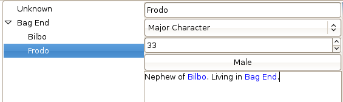
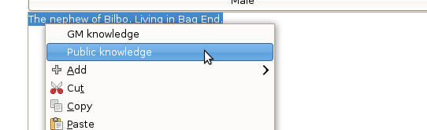

When the name of another element is entered into a description, a link is established between the two elements. In the screenshot below, Frodo is automaticly linked to both Bilbo and Bag End. Since he is now accosiatied with Bag End he will appear under it in the character chooser on the left.

By choosing some text and right clicking on it, a menu is brought up which is used for making the text known to the public. In this menu there is also entries for adding new elements, named after the chosen text.
